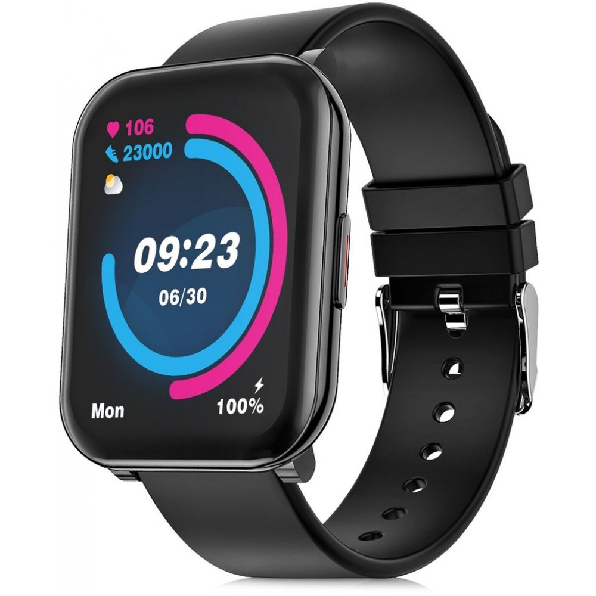
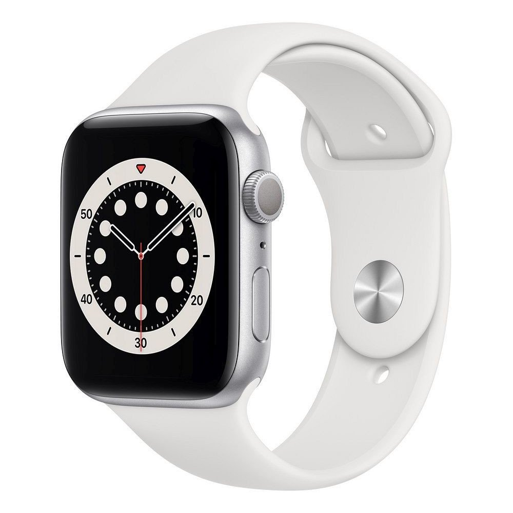
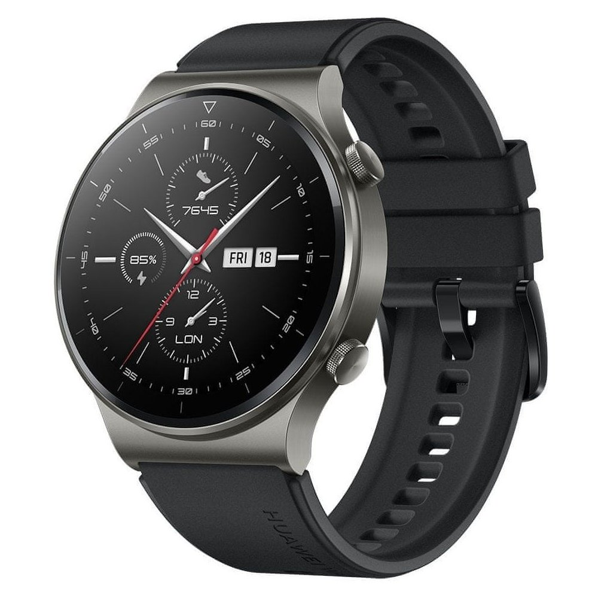
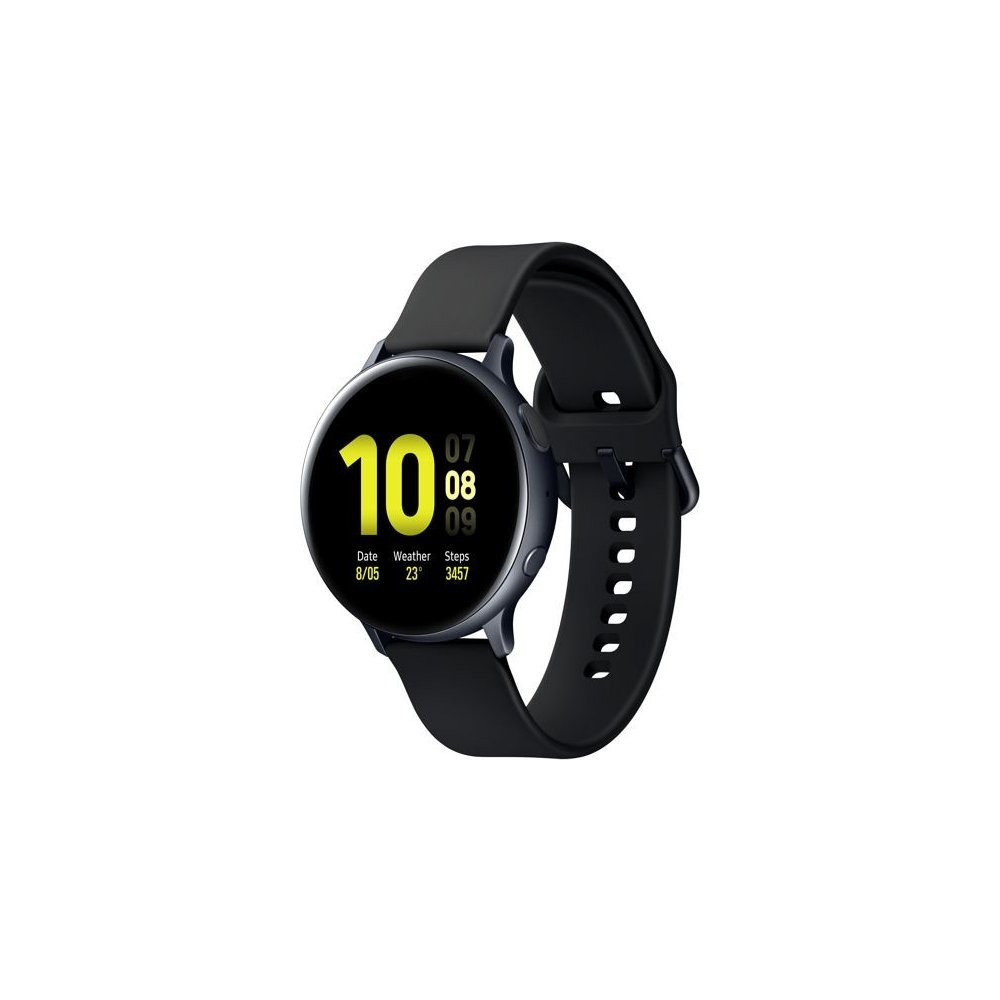

Smart hodinky

- Niceboy X-fit Watch 2
- Záleží vám na vašom zdraví? Chcete dobre spať alebo vás bavia štatistiky vašich športových výkonov? Inteligentné hodinky X-fit Watch 2 od značky Niceboy vás budú sprevádzať všade tam, kde budete chcieť. Či už je to intenzívny tréning jedného z 23 druhov športu alebo naopak odpočinok, kedy hodinky dohliadnu nielen na váš spánok, ale aj funkciu srdca. Samozrejmosťou je upozornenie na SMS, telefonáty a ďalšie.
- Výrobca - Niceboy
- Určenie - unisex
- Typ displeja - farebný
- Uhlopriečka displeja - 1.69 palce
- Dosah - 10 m
- Hmotnosť - 46 g
- Veľkosť displeja - 6.5 "
Cena: 52€
Apple Watch Series 6 44mm

S chytrými hodinkami Apple Watch Series 6 sa budete pri športe cítiť skvele. Aplikácia Saturácia kyslíkom vám podľa úrovne okysličenia krvi oznámi, či je vhodné daný deň cvičiť, alebo nie. Váš srdcový rytmus sledujú hodinky nepretržite a v prípade potreby vygenerujú vlnový priebeh EKG. Aplikácia Spánok vám pomôže sa uložiť k spánku každý deň v rovnakom čase a môžete sledovať, aké sú vaše spánkové rytmy. Venujte sa akémukoľvek športu, merajte a prekonávajte svoje výsledky. Množstvo pesničiek a krúžky Aktivity motivujú k aktívnemu zdravotnému štýlu.
- Výrobca - Apple
- Určenie - dámske
- Typ displeja - LTPO OLED
- Uhlopriečka displeja - 1.78 palce
- Veľkosť úložiska - 32 GB
- Hmotnosť - 36.5 g
Cena: 459€
Huawei Watch GT2 Pro

Zabudnite na klasické hodinky. S modelom Watch GT 2 Pro budete na zápästí nosiť všetky dôležité informácie, ktoré potrebujete – či už ste v práci, doma, cestujete alebo sa práve venujete športu. Technológie sú navyše zabalené do luxusného designu a kvalitných materiálov. Štýl hodiniek si hravo prispôsobíte vďaka stovkám ciferníkov. Prístroj ponúkne komplexné údaje o vašich výkonoch pri nespočte športových aktivít vrátane behu, lyžovania a golfu. Prostredníctvom vyspelých senzorov monitoruje okrem iného srdcovú frekvenciu, hodnotu VO2Max, saturáciu kyslíka, stresovú záťaž, kvalitu spánku či presnú polohu pomocou GPS.
- Výrobca - Huawei
- Určenie - unisex
- Typ displeja - AMOLED
- Uhlopriečka displeja - 1.39 palce
- Veľkosť úložiska - 4 GB
- Hmotnosť - 52 g
Cena: 229€
Watchking M11 Pro

Ukážte svoju eleganciu, tieto smart hodinky budú s vami každý deň a pomôžu vám na vašej ceste za úspechom. Obsahujú v balení dva druhy remienkov, kovový a silikónový, takže máte vždy na výber podľa toho čo sa vám práve dnes hodí (remienky je jednoduché vymeniť). Hodinky už dávno neslúžia len na ukazovanie času, vďaka týmto smart hodinkám budete mať prehľad o vašom spánku, prejdených krokoch, vzdialenosti, spálených kalóriách, ale aj o tom aký ste mali tep, alebo tlak počas dňa.
- Výrobca - Watchking
- Určenie - dámske
- Typ displeja - AMOLED
- Uhlopriečka displeja - 1.28 palce
- Hmotnosť - 84 g
Cena: 84€
Samsung Galaxy Watch Active2 44mm SM-R820

Inteligentné športové hodinky Galaxy Watch Active 2 od Samsungu tu pre vás budú na každom kroku. Sú vybavené GPS a monitorom srdcového tepu, množstvom športových režimov a veľkým dotykovým displejom. Hodinky sú vysoko odolné voči prachu a vode, takže sú vhodné aj pre náruživých plavcov. Ich vzhľad poteší každého perfekcionistu – vďaka vymeniteľným remienkom si ľahko zvolíte, ako budú vaše hodinky vyzerať.
- Výrobca - Samsung
- Určenie - unisex
- Typ displeja - Super AMOLED
- Uhlopriečka displeja - 1.4 palce
- Hmotnosť - 30 g